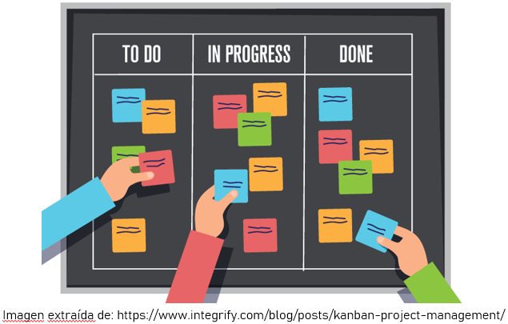
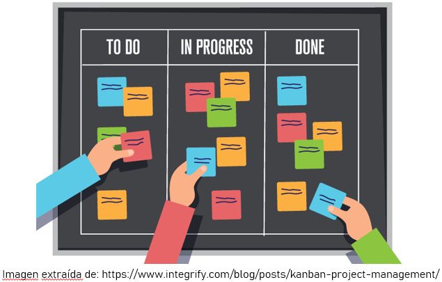

MOVE-IT
Buscamos las mejores peliculas y encontramos la mejor manera de mostrártelas
Planteamiento del problema
"Según la base de datos de IMBd se han realizado 3.600.000 títulos audiovisuales, de las cuales 342.000 son películas y el resto son capítulos de series de televisión."
"Es apenas evidente que ni en diez vidas que tuviésemos nos alcanzaría para ver y percibir, y mucho menos pensar, toda la producción cultural humana"
(JESÚS MILLÁN MUÑOZ, Mundiario. 28 de mayo de 2017)
La accesibilidad a los medios de difusión y producción cada vez mas extendida expone a los consumidores a una cantidad de información que crece descontroladamente. Por este motivo, los consumidores empiezan a precisar de ayudas automatizadas y ergonómicas que les permitan consumir responsablemente un contenido que les beneficie.
El problema anterior es especialmente percibido por los consumidores de películas. Y ya que estos representan una gran parte del público, dada la clásica tradición cinéfila de la sociedad del siglo XX, es un problema que debe ser resuelto lo antes posible por las grandes plataformas de distribución de contenido.
Propuesta de solución
Queremos crear una pagina en la que podamos dar una sugerencia de que pelicula le podria gustar al usuario, mediante los gustos de las personas. Además de brindar la recomendación la pelicula que le podria gustar al usuario, daremos la información de en que plataforma de streaming puede ver la pelicula
Además en la pagina encontraremos una gran lista de peliculas las cuales estaran divididas en diferentes categorias, como lo puede ser el genero
Antecedentes
Actualmente existen varias plataformas de streaming en donde podemos encontrar una recomendación persoonalizada para los usuarios, pero debido a que estas son demasiadas y no comparten catalogo de peliculas entre ellas, hace que el usuario pueda sentirse abrumado o perdido de en que lugar puede encontrar la pelicula que quiere ver
Algunas de estas plataformas son:
- Netflix
- Prime video
- Hbo max
Una de las más parecidas donde podemos encontrar en donde ver la pelicula que queremos ver es:
- Imdb
Requerimientos
Funcionales:
- No debe hacer recomendaciones erroneas, que no esten en streaming o exclusivas de cine
- recomendacion pelicula streaming, informacion actualizada, multimedia funcional y categorizacion
No funcionales:
- Funcionar en varios navegadores web y en dispositivos moviles
Levantamiento requerimientos
Las necesidades el correcto funcionamiento de las fuentes de datos, servidores y el hardware
- Las tecnicas usadas para este levantamiento son la lluvia de ideas y prototipo.
- Todo este desarrollo se realizara haciendo uso de la metodologia agil SCRUM
Metodologías de desarrollo
SCRUM
KANBAN
Extremme Programming
Decisión final
 
